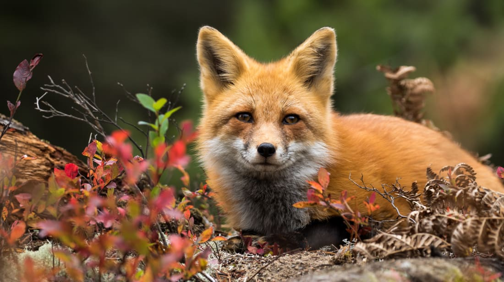
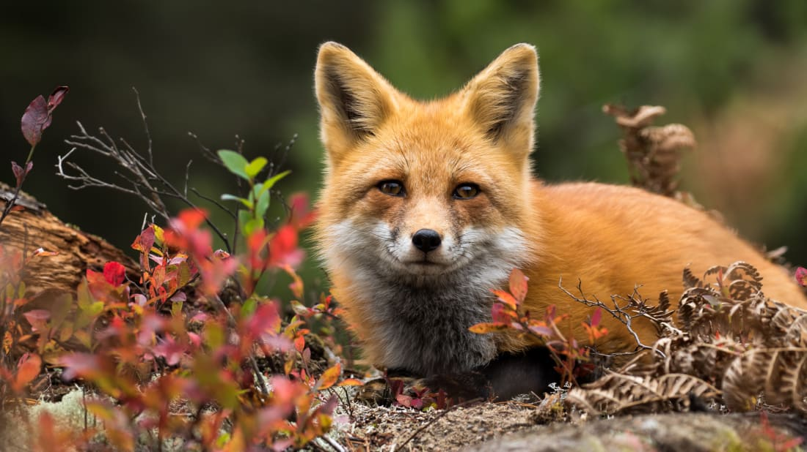

LION
The lion (Panthera leo) is a large felid of the genus Panthera native mainly to AfricaI. It has a muscular, deep-chested body, short, rounded head, round ears, and a hairy tuft at the end of its tail. It is sexually dimorphicI; adult male lions have a prominent mane. With a typical head-to-body length of 184 to 208 cm (72 to 82 in) they are larger than females at 160 to 184 cm (63 to 72 in). It is a social species,forming groups called prides. A lion pride consists of a few adult males, related females and cubs. Groups of female lions usually hunt together, preying mostly on large ungulates. The lion is an apex and keystone predator; although some lions scavenge when opportunities occur and have been known to hunt humans, the species typically does not.
TIGER
The tiger (Panthera tigris) is the largest living cat species and a member of the genus Panthera. It is most recognisable for its dark vertical stripes on orange-brown fur with a lighter underside. It is an apex predator, primarily preying on ungulates such as deer and wild boar. It is territorial and generally a solitary but social predator, requiring large contiguous areas of habitat, which support its requirements for prey and rearing of its offspring.
RED FOX
Foxes are small to medium-sized, omnivorous mammals belonging to several genera of the family Canidae. They have a flattened skull, upright triangular ears, a pointed, slightly upturned snout, and a long bushy tail (or brush).
POLAR BEAR
The polar bear (Ursus maritimus) is a hypercarnivorous bearI whose native range lies largely within the Arctic Circle, encompassing the Arctic Ocean, its surrounding seas and surrounding land masses. It is the largest extant bear species, as well as the largest extant land carnivore.A boar (adult male) weighs around 350–700 kg (770–1,540 lb), while a sow (adult female) is about half that size.